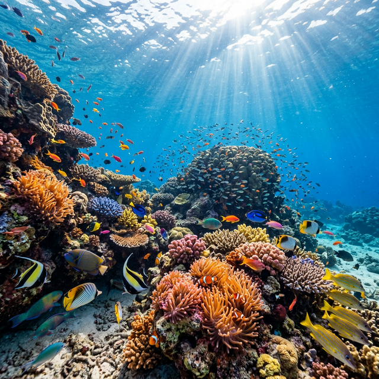
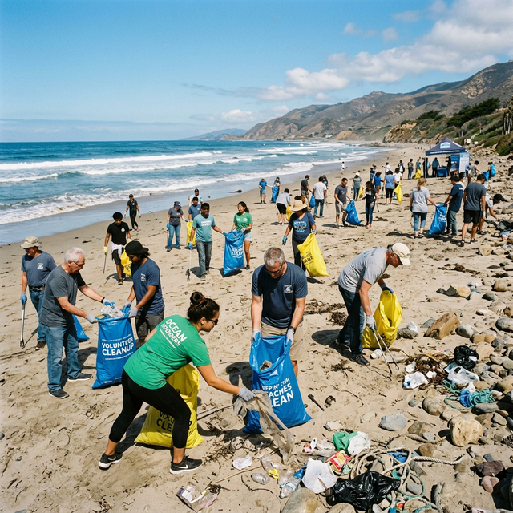
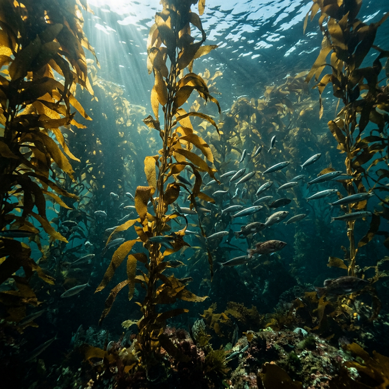

Ocean Conservation Gallery
Explore stunning images of marine life and ocean conservation efforts. Click any image for a closer look.
Marine Life & Conservation

Coral Reef Ecosystem
Diverse marine life thriving in a healthy reef

Green Sea Turtle
Graceful sea turtle gliding through the ocean

Beach Cleanup Effort
Volunteers making a difference in their community

Marine Biodiversity
The incredible diversity of ocean life

Plastic Pollution
The devastating impact of plastic waste

Kelp Forest
A vital underwater ecosystem